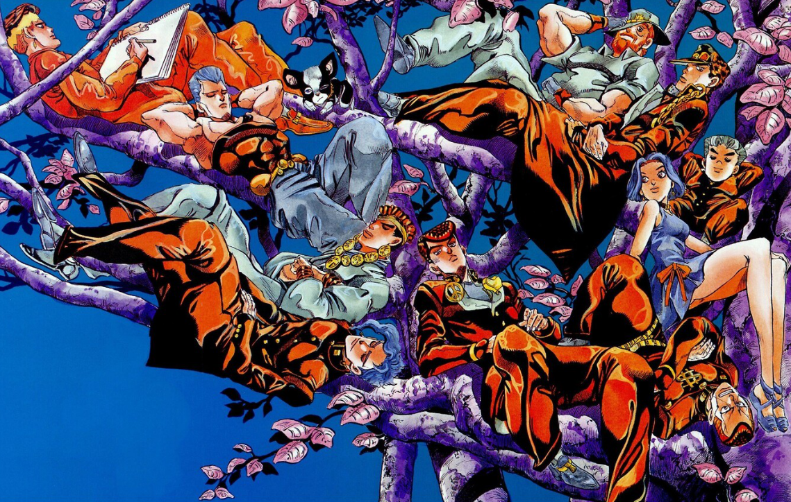

The universe of JoJo's Bizarre Adventure is a reflection of the real world with the added existence of supernatural forces and beings. In this setting, some people are capable of transforming their inner spiritual power into a Stand (スタンド, Sutando), which are psycho-spiritual manifestations of a person's fighting spirit; another significant form of energy is Hamon (波紋; "Ripple"), a martial arts technique that allows its user to focus bodily energy into sunlight via controlled breathing. The narrative of JoJo's Bizarre Adventure is split into parts with independent stories and different characters. Each of the series' protagonists is a member of the Joestar family, whose mainline descendants possess a star-shaped birthmark above their left shoulder blade and a name that can be abbreviated to the titular "JoJo". The first six parts take place within a single continuity whose generational conflict stems from the rivalry between Jonathan Joestar and Dio Brando, while the latter three parts take place in a second continuity where the Joestar family tree is heavily altered.
-Wikipedia

Art by Hirohiko Araki